关于我
Wang Ming
热爱CSGO与电竞，永远追求技术进步
"游戏不只是娱乐，更是一种竞技与艺术的结合"
个人简介
我是Wang Ming，一名充满激情的CSGO玩家和电竞爱好者。从接触CSGO的第一天起，我就被这款游戏的战术深度和技术要求所吸引，这种热爱驱使我不断提升自己的游戏技术。
我相信电子竞技和传统体育一样，需要坚持不懈的训练和团队默契的配合。在我看来，优秀的CSGO玩家不仅需要精准的枪法，更需要出色的意识和战术理解能力。
目前，我主要擅长使用AK-47和AWP，喜欢在比赛中担任突破手或狙击手的角色。我注重团队配合，相信只有默契的团队才能取得最终的胜利。
我的游戏理念
- 技术为本: 扎实的基本功是成为强者的基础
- 团队至上: 再强的个人也比不上完美的团队配合
- 战术思维: 游戏不只靠枪法，更靠头脑和战术
- 保持热情: 享受游戏过程，保持对电竞的热爱
游戏时刻
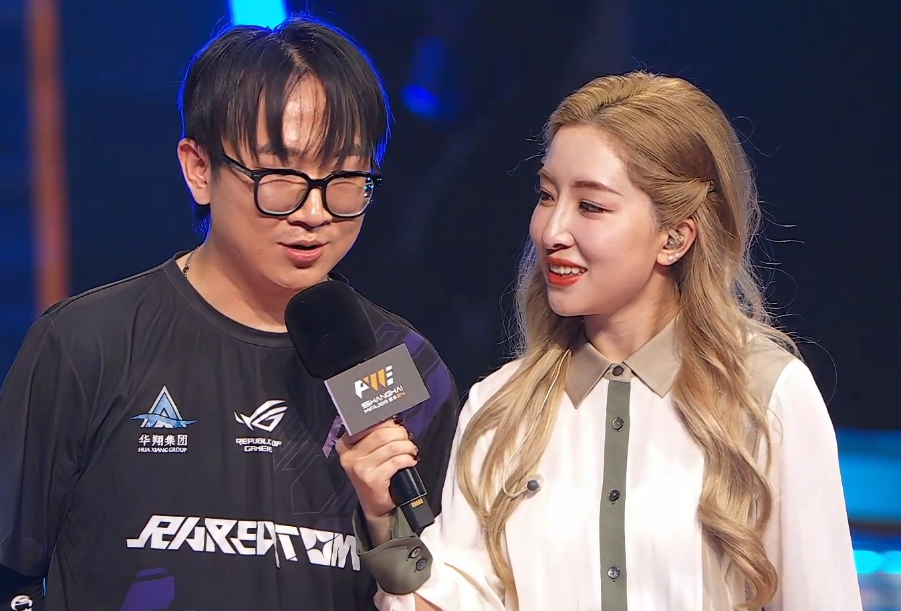
五杀精彩时刻
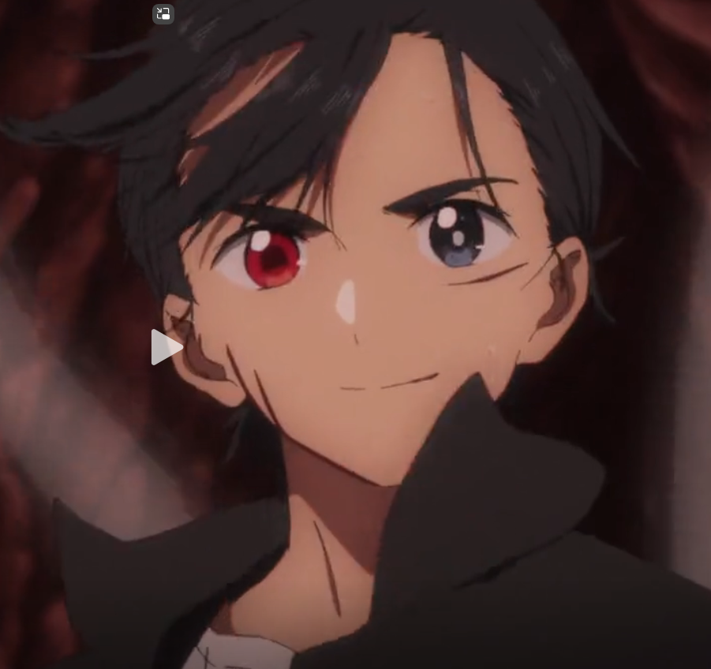
2022年地区联赛
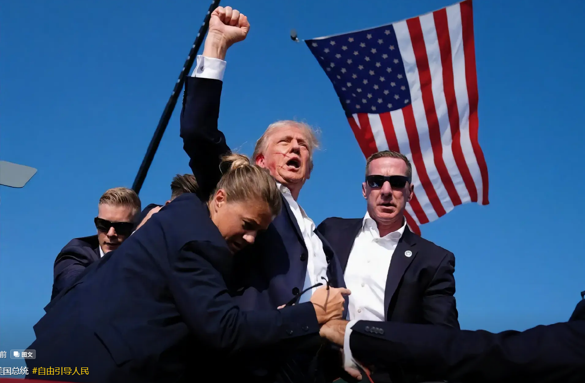
与战队成员合影
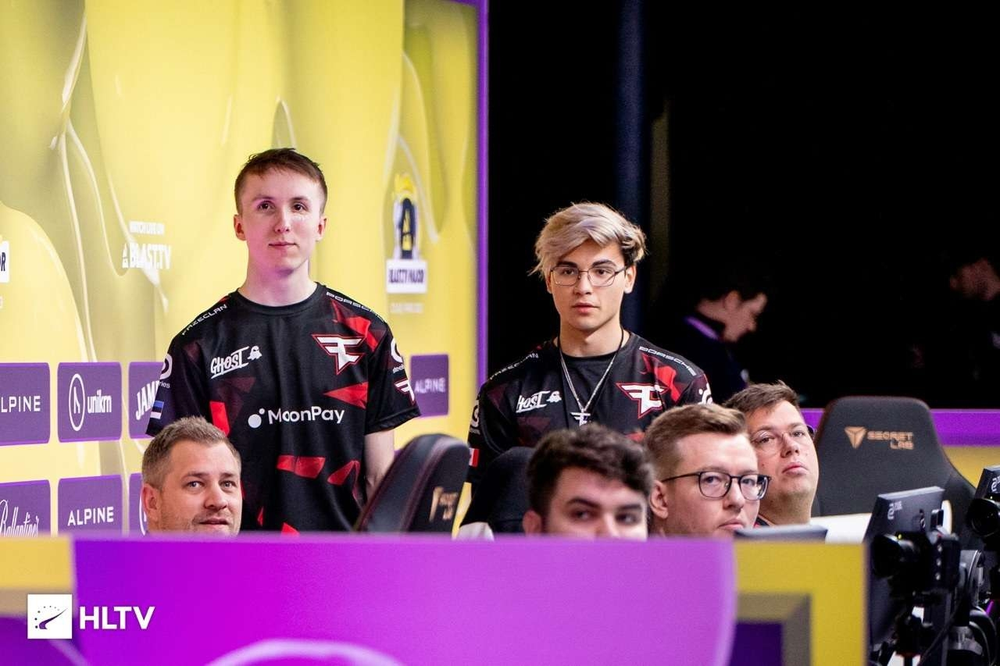
我的游戏装备
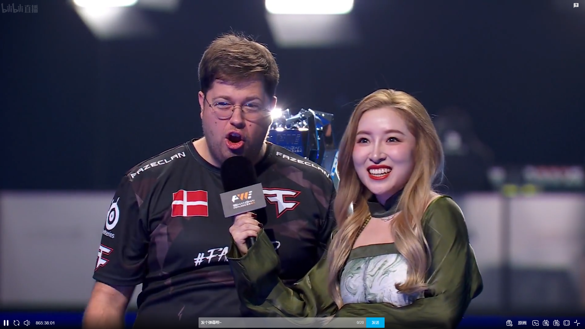
电竞赛事现场观赛
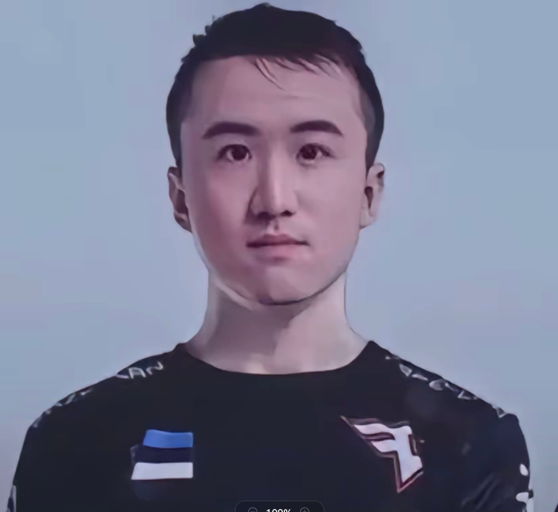
珍藏的游戏皮肤
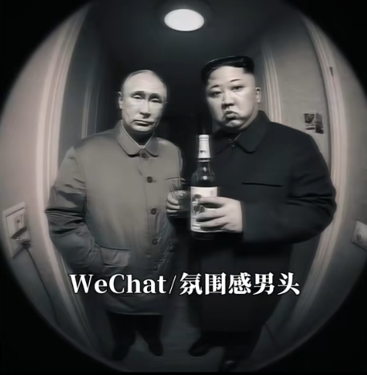
珍藏的游戏皮肤
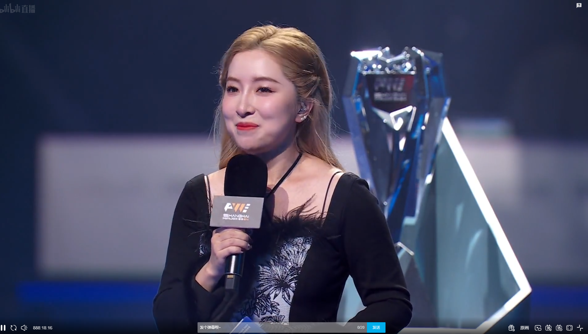
珍藏的游戏皮肤
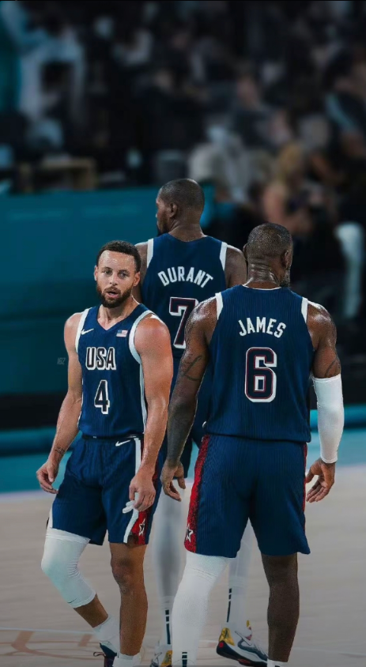
珍藏的游戏皮肤
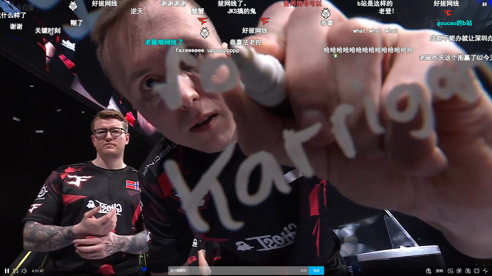
珍藏的游戏皮肤
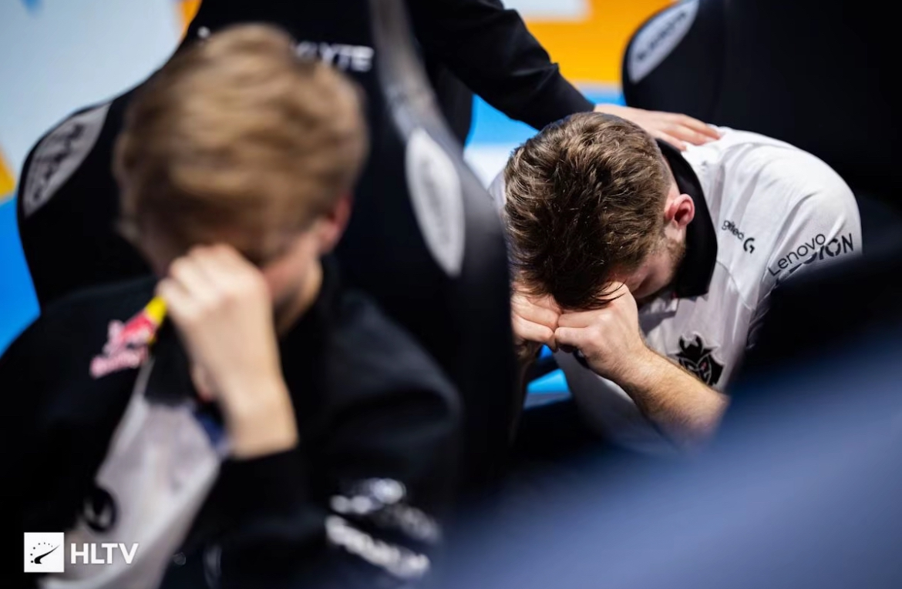
珍藏的游戏皮肤
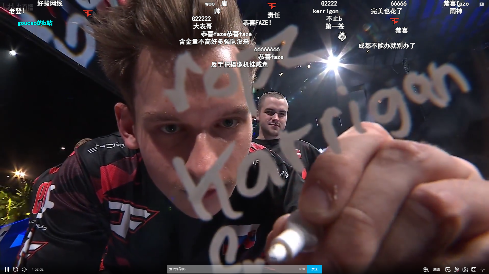
珍藏的游戏皮肤
游戏爱好
CSGO
我的主要游戏，已有超过3000小时的游戏时长。擅长使用AK-47和AWP，喜欢担任突破手和狙击手角色。
电竞比赛
热衷观看职业比赛，特别是Major赛事。最喜欢的职业战队是NAVI和G2，经常分析职业选手的比赛录像学习技巧。
皮肤收藏
喜欢收集游戏皮肤，特别是刀具和手套。目前已收藏了多把罕见刀具和高级枪械皮肤。
硬件装备
关注游戏硬件设备，使用240Hz显示器和专业游戏鼠标键盘。相信好的装备能提升游戏体验和表现。
游戏直播
偶尔会直播自己的游戏过程，分享游戏技巧和心得。喜欢与观众互动，一起讨论游戏策略。
战队活动
与固定战队一起参加各类线上和线下比赛。相信团队配合是获胜的关键，常与队友一起研究战术。
游戏历程
2015
首次接触CSGO
开始接触CSGO游戏，学习基础操作和地图知识。
2017
组建战队
与几位志同道合的朋友组建了自己的CSGO战队，开始系统训练。
2018
首次参赛
参加了第一次线下比赛，虽然成绩不佳，但积累了宝贵经验。
2019
技术突破
游戏水平有了显著提升，在MM中达到了全球精英级别。
2021
地区比赛
与战队在地区联赛中获得了第二名的成绩，开始被更多人认识。
至今
持续进步
持续参加各类比赛，不断提升个人技术和团队配合能力，追求更高水平。